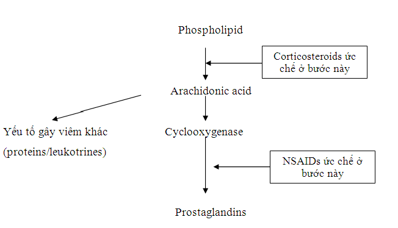

Anti - inflammatory agents
* Định nghĩa:
+ Chất chống viêm.
+ Như: corticoide, aspirin...
* CORTICOSTEROIDS
Tác dụng phụ toàn thân và biến chứng
1. Corticosteroids là chất chống viêm rất mạnh nhưng có thể gây nên những tác dụng phụ trầm trọng
2. Những bệnh nhân đang được điều trị corticosteroid phải được theo dỏi sát. Sử dụng lâu dài, dai dẳng những thuốc này không được khuyến cáo
3. Corticosteroids tại chổ ít tác dụng phụ hơn đường toàn thân
4. Những ảnh hưởng lên mắt như là tăng nhãn áp, đục dưới bao sau, và viêm giác mạc herpes thể hoạt động thông thường có thể xảy ra .
5. Cảnh báo nên được đưa ra khi sử dụng corticosteroid mà có nhiễm trùng cấp, mạn tính hay tái phát.
Khi bị tấn công bởi các yếu tố vật lý, hóa học, nhiễm trùng hay những tác nhân khác, cơ thể phản ứng lại qua quá trình gây viêm. Viêm được đặc trưng bởi dấu hiệu chính: sưng nóng đỏ đau, là cách mà cơ thể thay đổi để tạo sức mạnh và che chở chống lại những tác nhân gây viêm. Những dấu hiệu chính là do những mạch máu bị dãn và nhiều máu hơn tập trung vào vùng chấn thương. Những mạch máu này có lỗ rò rỉ và cho phép một số tế bào đặc biệt và sinh hóa đến vùng chấn thương. Nhiệt độ tổ chức gia tăng để tăng quá trình tế bào và bắt đầu hàn gắn.
Viêm có thể có lợi và có hại. Dẫu cho ích lợi của nó trong việc chống lại nhiễm trùng, tác động của nó có thế là không mong muốn, như trong các trường hợp phản ứng dị ứng và những bệnh tự miễn đặc biệt.
Tiến trình viêm là kết quả của nhiều phản ứng sinh hóa khác nhau và sự tác động qua lại toàn bộ cơ thể. Nhiều chất được sản sinh ra hoặc được kích hoạt như một kết quả của chấn thương, bao gồm kháng thể, những bạch cầu chuyên biệt, protein và prostaglandins. Chắc chắn những thuốc chống viêm như corticosteroid và NSAID hoạt động bằng cách làm gián đoạn việc sản xuất chất viêm và tiến trình kích hoạt viêm.
Khi cơ thể được báo hiệu bởi tổn thương, chắc chắn những chất hóa sinh được gọi là phospholipid, được chuyển thành acid arachidonic. Acid này tiếp tục chuyển thành những chất trung gian khác nhau qua một vài đường riêng rẻ, một trong số chúng là prostaglandin. Chất này và những chất khác có trách nhiệm phần chính của quá trình viêm. Các thuốc như corticosteroid và NSAIS hoạt động ở những mức độ khác nhau của tiến trình này để ngăn chặn hình thành chất hóa sinh trên và những ảnh hưởng của viêm xảy ra tiếp theo.
Prostaglandin là chất hóa học điều chỉnh phản ứng viêm. Hoạt động của chúng phụ thuộc vào loại prostaglandin nào và mô đặc hiệu nào ở đó chúng hoạt động. Thêm nữa để gây đau, sốt, prostaglandin đóng một vai trò trong việc sản sinh những mạch máu mới, cục máu đông, tiết dịch vị, co và dãn mạch máu và co tử cung. Ở mắt, prostaglandin tác động cảm giác đau, đỏ, sưng. Chúng có thể gây dãn đồng tử trong khi phẫu thuật và biến đổi nhãn áp.
Như hình 7-1, corticosteroid chặn việc sản xuất acid arachidonic và ngăn chặn sự hình thành nhiều chất sinh hóa khác, bao gồm prostaglandin. Hoạt động đặc hiệu hơn, NSAID chỉ chặn việc sản xuất prostaglandin, những hoạt động thể dịch khác vẫn hoạt động. Bằng cách này, corticosteroid và NSAID giảm đau, đỏ, và sưng có liên quan đến viêm. Tuy nhiên, Corticosteroid và NSAID không loại trừ những chất kích thích gây nên viêm.
Corticosteroid là một thuốc thiết yếu trong điều trị bệnh lý về mắt với mục đích giảm viêm. Cho dù những nguyên nhân gây viêm là cơ học, nhiễm trùng, hóa học, hay những nguyên nhân khác, tác dụng của việc điều trị này là như nhau.
Corticosteroid có liên quan và có tính bắt chước những chất được sản xuất bởi cơ thể. Những chất này có nhiều chức năng hoạt động và điều chỉnh, một trong những chức năng đó là giảm viêm. Như hình 1, corticosteroid ảnh hưởng hoạt động sản xuất protein, leukotriene và protaglandin, mà những thành phần khác nhau này tạo nên đáp ứng viêm. Bằng cách này, thuốc làm giảm đi sự giãn nỡ và tính thấm của mách máu, vì thế hạn chế đỏ và sưng. Chúng cũng làm giảm sự tân tạo bạch cầu, chống ngưng tập tế bào mast và phóng thích histamine.
Do hoạt động không đặc hiệu và tác động toàn bộ, corticosteroid là thuốc được sử dụng nhiều nhất với mục đích giảm bệnh lý gây viêm ở mắt (hình 1, 2). Chúng cũng được sử dụng trong nhiều chuyên khoa với các bệnh lý toàn thân khác nhau.

Hình 1. Cơ chế chống viêm của corticosteroid và NSAIDs
Bảng 1 Chọn lựa dùng corticosteroid trong điều trị nhãn khoa
Bỏng hóa chất
Viêm kết mạc dị ứng
Phản ứng miễn dịch cho mảnh ghép
Viêm giác mạc nhu mô do Herpes
Thâm nhiễm nhiễm giác mạc vô khuẩn
Viêm giác mạc kẽ
Viêm màng bồ đào
Viêm cũng mạc, thượng củng mạc
Viêm võng mạc
Viêm thị thần kinh
Viêm động mạch thái dương
Giả u hốc mắt
Bệnh lý mắt tuyến giáp
Bảng 2 Hiệu lực chống viêm liên quan đến corticosteroid được chọn lựa
Thuốc
Hiệu lực liên quan
Betamethasone
25
Dexamethasone
25
Methylprednisone
5
Triamcinolone
5
Prednisolone
4
Hydrocortisone
1
Tác dụng phụ toàn thân và biến chứng
Ảnh hưởng của corticosteroid không xuất phát từ giá cả. Corticosteroid giống với những chất trong cơ thể, những chất có nhiều hoạt động để giảm viêm. Corticosteroid có thể làm nổi bật hoặc thay đổi những hoạt động khác, kết quả là gây nên nhiều nguy cơ và tác dụng phụ. Cũng với hầu hết các thuốc trong liệu trình điều trị, vấn đề chính của tác dụng phụ là quá rõ ràng với việc điều trị toàn thân, cho dù thuốc vẫn dùng theo chỉ định. Làm tắc điểm lệ được khuyên thực hiện khi sử dụng corticosteroid nhỏ mắt để giảm những biến chứng tiềm ẩn.
Về toàn thân, việc sử dụng những thuốc này có thể làm phân bố lại mỡ, yếu cơ và xương, mất cân bằng điện giải, chậm phát triển, loét dạ dày và loạn thần. Thêm nữa, những bệnh nhân đã sử dụng corticosteroid dễ nhạy cảm hơn với nhiễm trùng mới hoặc tái phát. Điều này đặc biệt đúng với nhiễm trùng do herpes. Nguyên do đơn giản là đáp ứng miễn dịch của cơ thể bị giảm sút trong khi điều trị. Đó là hậu quả mà cơ thể không tập hợp được chất đề kháng chống lại tác nhân, và nhiễm trùng dễ xuất hiện. Sự lành vết thương có thể bị chậm. Vì thế, corticosteroid phải được sử dụng một cách thận trọng ở những bệnh nhân đang nhiễm trùng, có một bệnh sử nhiễm trùng tái phát, hoặc hệ miễn dịch suy giảm.
Vấn đề cần lưu tâm khác với việc sử dụng corticosteroid là thiếu cortico thượng thận. Tuyến thượng thận là một tuyến nội tiết nằm ở trên đỉnh của mỗi quả thận. Vỏ thượng thận sản xuất ra hóa chất giống với corticosteroid. Có một sự giảm sút hay ngừng hẳn việc sản xuất tự nhiên những chất tương tự của cơ thể trong khi thiếu cortico thượng thận. Bởi vì phản ứng ngược sinh học sinh lý, khi liệu pháp corticosteroid được sử dụng, cơ thể nhạy cảm với những thuốc sử dụng toàn thân. Rồi thì cơ thể giảm sản xuất tự nhiên để đưa nồng độ trở về cân bằng. Khi quá trình sản xuất tự nhiên bị giảm kéo dài, có thể xảy ra teo vỏ thượng thận. Nếu điều này xảy ra, cơ thể không tạo ra lượng hóa chất bình thường cho chính nó, những rối loạn xảy ra khi liều lượng điều trị không được tiếp tục.
Thiếu cortico thượng thận thường tạm thời nhưng có thể là vĩnh viễn và liên quan trực tiếp đến sử dụng liều cao và không theo liệu trình điều trị. Ức chế thượng thận có thể trầm trọng đến nỗi sự sản xuất sinh lý không thể bắt đầu đủ nhanh khi điều trị kéo dài không được tiếp tục. Một khi rút lui nguồn ngoại sinh diễn ra, nồng độ yêu cầu để có chức năng bình thường của cơ thể không được duy trì. Điều này có thể là một tình trạng rất nguy hiểm. Trước hết, nồng độ corticosteroid không tương xứng (sinh lý hoặc điều trị), viêm sẽ không được khống chế, và một phản ứng dội của bệnh này có thể xảy ra. Những vi sinh mới có thể phát triển trên cơ thể suy yếu, những rối loạn thứ phát có thể tăng lên. Sau đó, việc ngừng steroid có thể gây nên hội chứng lờn thuốc, giảm cân, đau đầu, sốt, đau cơ, buồn nôn và nôn.
Bởi vì những nguy cơ của việc ngưng điều trị giữa chừng, corticosteroid được chỉ định toàn thân không nên ngừng đột ngột nếu thời gian điều trị kéo dài quá 5-7 ngày. Thay vì vậy, điều trị nên được dùng bằng đường uống với giảm liều từ từ và liên tục. Việc làm này cho phép nồng độ sinh lý phục hồi, vì thế tránh những biến chứng không mong muốn. Tỷ lệ rút dần liều điều trị phải đáp ứng đủ thời gian và mức độ; dài hơn thời gian điều trị và chậm hơn trong việc ngưng thuốc.
Ức chế chức năng cortico thượng thận có thể xảy ra nhưng thường hiếm với thuốc nhỏ tại chổ, và nó dường như ít hơn với thuốc dạng mỡ và dạng kem. Ức chế không xảy ra sau khi điều trị ngắn hạn.
Tác dụng phụ và biến chứng ở mắt
Có vài tác dụng phụ tiềm ẩn ở mắt có thể do sử dụng corcosteroid. Trước hết là đục dưới bao sau. Sự hình thành không hồi phục của loại đục thể thủy tinh này có liên quan trực tiếp với liều và thời gian điều trị. Hầu hết những trường hợp liên quan với điều trị kéo dài 6 tháng hoặc nhiều hơn với những corticosteroid mạnh hơn. Đục dưới bao sau, do khu trú ở trung tâm, có thể làm giảm thị lực và đòi hỏi phải phẫu thuật.
Tiếp theo, điều trị corticosteroid tại chổ có thể gây nên tăng nhãn áp. Vấn đề này xảy ra khoảng 8%, tăng IOP thường xảy ra 3-6 tuần sau khi bắt đầu điều trị. Tăng nhãn áp được thấy nhiều hơn với điều trị corticosteroid mạnh hơn, như dexamethasone và những bệnh nhân có glaucoma trước đó. Thường chỉ xảy ra với sử dụng thuốc tại chổ, nó cũng có thể tăng với điều trị toàn thân.
Tăng nhãn áp giống với hậu quả của giảm lưu thông thủy dịch từ mắt. Điều này phổ biến ở những bệnh nhân nhạy cảm có áp lực tăng hơn 10mmHg. Bất kỳ sự tăng nhãn áp nào thường hồi phục, trở về giới hạn bình thường 1 – 3 tuần sau khi ngưng thuốc. Tuy nhiên, nếu nhãn áp vẫn cao trong một thời gian, cái gọi là glaucoma do steroid có thể xảy ra đồng thời với tổn hại thị thần kinh và mất thị trường. Bệnh nhân đang trong quá trình điều trị corticosteroid phải được theo dõi nhãn áp thường qui để phát hiện những tác dụng không mong muốn.
· Nhiều phản ứng có hại có khả năng xảy ra với corticosteroid. Bất kỳ những thay đổi bất thường nào nên được báo lại cho bác sỹ của bạn.
· Sau khi sử dụng corticosteroid nhỏ mắt, nhắm mắt và dùng ngón trỏ ấn nhẹ vào góc mắt trong. Điều này giúp giữ thuốc trong mắt và không cho thuốc ngấm vào toàn thân, giảm đi nguy cơ tác dụng phụ.
· Thuốc nhỏ corticosteroid và mỡ có thể gây ra glaucoma và đục thể thủy tinh. Đúng hẹn tái khám với bác sỹ điều trị cho bạn, người có thể nhận ra những dấu hiệu sớm của những rối loạn này.
· Nguy cơ đục thể thủy tinh và glaucoma từ thuốc nhỏ mắt có corticosteroid là tối thiểu với việc sử dụng thời gian ngắn thường là cần thiết cho hầu hết các bệnh lý nhãn khoa.
· Không bao giờ bắt đầu điều trị steroid mà không có tư vấn của bác sỹ.
· Không bao giờ ngưng điều trị steroid theo ý của bạn. Thuốc này cần được cho bởi bác sỹ. Không tuân thủ điều trị có thể gây nên những nguy cơ có hại trầm trọng cho sức khỏe.
Sử dụng corticosteroid cũng có thể dẫn đến một sự gia tăng độ dày giác mạc, dãn đồng tử và sụp mi. Như với sử dụng toàn thân, điều trị steroid tại chổ không nên sử dụng đơn độc ở những trường hợp nhiễm trùng cấp. Đặc tính chống viêm sẽ giảm những triệu chứng liên quan, đem lại một diện mạo là bệnh đang lành (cả bác sỹ lẫn bệnh nhân). Thật sự, thuốc đang che dấu và giúp đỡ diễn tiến bệnh bên trong. Đặc biệt, corticosteroid nên sử dụng với sự thận trọng khi điều trị bệnh nhân có tiền sử viêm giác mạc herpes. Những thuốc này có thể gây tái phát hoặc gia tăng phơi nhiễm hiện có.
Sau cùng, một vài thuốc pha chế thị trường có chứa sulfite. Chắc chắn bệnh nhân biết về tính nhạy cảm của các hợp chất này. Vì vậy, việc điều trị phải được học hỏi khi chọn lựa liều pháp này.
Cho điều trị nhãn khoa, chỉ định có thể tại chổ, tiêm (trực tiếp hoặc khá xa với vị trí hoạt động mong muốn), tĩnh mạch, hoặc uống.
Corticosteroid tại chổ
Chỉ định tại chổ là đường thường sử dụng trong chọn lựa điều trị bệnh lý nhãn khoa. Hầu hết viêm nhiễm mắt biểu hiện ở bán phần trước: kết mạc, giác mạc, tiền phòng, và bồ đào trước. Hơn nữa, chỉ định dùng thuốc tại chổ giảm nguy cơ tiềm tàng và tác dụng phụ liên quan đến thuốc này.
Ở hình thức tại chổ, corticosteroid là điểm chính điều trị viêm liên quan đến bán phần trước mắt. Hơn nữa để dùng sau phẫu thuật đục thể thủy tinh và khúc xạ, có nhiều sử dụng khác nhau với những thuốc này. Corticosteroid tại chổ hoạt động hiệu quả nhất với những viêm cấp và kém hơn trong điều trị bệnh mạn tính. Chúng cũng có một ít tác dụng lên những bệnh thoái hóa.
Corticosteroid tại chổ trong nhãn khoa có thể chỉ định như dịch treo, dung dịch và mỡ. Trong một vài loại, dịch treo là hiệu quả hơn dạng nước. Mỡ là ít hiệu quả nhất. Mặt dù chúng gia tăng thời gian tiếp xúc với bề mặt nhãn cầu, thuốc mỡ dường như gắng kết thuốc này, giảm khả năng trong điều trị thấm sâu.
Mỗi một steroid nguyên chất, như prednisolone hoặc dexamethasone, có thể có hơn một dạng; ví dụ dexamethasone có thể sử dụng như dexamethasone alcohol hoặc muối phosphate. Dạng alcohol hoặc phosphate được biết như dẫn xuất của nó. Dẫn xuất corticosteroid này đóng một vai trò quan trọng trong cả tác dụng toàn bộ và tá dược lỏng của nó. Trong điều trị phối hợp, công thức acetate và alcohol sẽ hình thành dịch treo, trong khi thành phần phosphate sẽ tồn tại dung dịch thật. Hơn nữa, sử dụng corticosteroid nguyên chất, thành phần có acetate có hoạt động chống viêm nhiều hơn loại alcohol; thuốc pha chế phosphate ít hiệu quả nhất. Việc chọn lựa steroid được cân nhắc về sự liên quan giá cả, tính thuận lợi, an toàn, hiệu quả của những corticosteroid (Bảng 3)có thể sử dụng đối với bệnh và nhu cầu để điều trị.
Việc sử dụng thuốc có thể thường mỗi giờ đến một lần một ngày, phụ thuộc vào loại, vị trí, mức độ nặng, và diễn biến viêm. Điều trị nên được bắt đầu nhanh chóng và đủ tấn công để ức chế viêm. Một khi viêm được chế ngự, giảm liều nên được bắt đầu.
Thường thường, không cần thiết giảm liều điều trị tại chổ trừ phi thời gian điều trị quá 2-3 tuần hoặc viêm trầm trọng. Ở những trường hợp này, bác sỹ có thể tham khảo sử dung thời gian giảm liều ngắn: 4 lần mỗi ngày trong 4 ngày, 3 lần mỗi ngày trong 3 ngày và tiếp tục như vậy cho đến khi ngừng hẳn dùng thuốc. Nếu sử dụng kéo dài hoặc bệnh tái phát, giảm liều chậm là cần thiết (giảm chỉ 1 giọt mỗi tuần hoặc chậm hơn). Bệnh nhân luôn luôn được cảnh báo những nguy hiểm đối với việc ngưng dùng corticosteroid theo ý bản thân.
Bảng 3
Hiệu quả trong việc làm giảm viêm ở giác mạc khi chọn corticosteroid tại chổ
Thuốc
Giảm xuyên qua biểu mô nguyên vẹn
Prednisolone acetate 1%
51%
Dexamethasone0,1%
40%
Fluorometholone 1%
31%
Prednisolone phosphate 1%
28%
Dexamethasone phosphate 0,1%
18%
Tiêm và tiêm tĩnh mạch
Tiêm cạnh nhãn cầu được sử dụng ở những trường hợp mà tại đó viêm không đáp ứng với thuốc nhỏ đơn độc và phối hợp là cần thiết. Thuốc được tiêm thường dưới kết mạc hoặc dưới bao Tenon. Ở đây, sự hấp thu nhiều hơn sẽ xảy ra, và nhiều thuốc hơn sẽ tác dụng hơn đến vùng mong muốn điều trị. Tiêm cạnh nhãn cầu được phối hợp thuốc nhỏ nhưng thiếu hiệu quả, tiện lợi và sự an toàn được cân nhắc cho điều trị đầu tiên.
Trong một số trường hợp có lợi khi tiêm thuốc trực tiếp vào tổ thương. Điều này đặc điểm đúng khi điều trị chắp. Betamethasone và triamcinolone là những thuốc lựa chọn chủ yếu điều trị theo đường này.
Điều trị những bệnh lý rõ ràng đôi khi sử dụng corticosteroid đường tĩnh mạch. Gần đây, tiêm tĩnh mạch methylprednisolone, kết hợp thuốc uống đã được chấp nhận trong việc điều trị những viêm thị thần kinh nặng.
Chỉ định đường uống
Sử dụng đường uống, thường là prednisolone, cũng không thường xuyên lắm trong điều trị bệnh nhãn khoa. Vai trò chính của nó là điều trị viêm ở mắt do bệnh lý toàn thân như là: bệnh Grave, bệnh nhược cơ, viêm động mạch thái dương và những bệnh lý mạch máu collagen như là thấp khớp. Trong hầu hết các trường hợp, cả hai dạng chỉ định tại chổ và cạnh nhãn cầu là an toàn và chọn lựa hiệu quả hơn. Thỉnh thoảng, trong điều trị viêm bán phần trước nặng hoặc có liên quan đến bán phần sau, dùng bằng đường uống (một mình hoặc trong kết mạc với đường khác) được cho phép.
Loại corticosteroid thường sử dụng nhất điều trị mắt tại chổ là prednisolone, fluorometholone, dexamethasone, rimexolone, medrysone.
Prednisolone acetate 1% (Pred Forte, Econopred Plus) được xem có chất lượng khi so sánh với những corticosteroid nhỏ mắt khác. Dịch treo này thấm qua giác mạc dễ dàng và đạt hiệu quả mạnh nhất khi so sánh với tất cả những thuốc nhãn khoa khác. Cũng vì vậy, nó dễ tăng IOP hơn và tác dụng phụ nhiều hơn thuốc so sánh với nó. Chính nguyên nhân này, hầu hết bác sỹ điều trị hoặc sử dụng prednisolone yếu hơn dịch 0,12% hoặc 0,125% (PredMild, Econopred) hoặc tránh xa hoàn toàn những thuốc này khi điều trị những trường hợp viêm mức độ vừa. Prednisolone muối phosphate cũng có giá trị điều trị. Chúng được bán ở dạng dung dịch nồng độ 1% và 0,125%. Prednisolone không dùng được ở dạng mỡ tra mắt.
Fluorometholone có thể ở dạng dịch treo hoặc mỡ. Được bán ở nồng độ 0,1% ở cả hai dạng, và một dạng dịch treo 0,25% (FML Forte), những corticosteroid yếu hơn cơ bản được sử dụng trong điều trị những hình thức viêm mạn tính từ nhẹ đến trung bình (thường là viêm kết mạc dị ứng). Nó ít mang lại hiệu quả tốt khi sử dụng để điều trị viêm màng bồ đào. Chính vì ích lợi này từ các thuốc trên giảm nguy cơ những biến chứng không mong muốn như tăng nhãn áp.
Một giới thiệu mới đây về loạt liệu pháp là bổ sung dịch treo fluorometholone acetate nồng độ 0,1% (Flarex, Eflone). Do có cấu tạo công thức acetate, sự thấm qua giác mạc được cải thiện và gia tăng hiệu quả của nó. Những nghiên cứu cho rằng nó đạt được hiệu quả của prednisolone acetate nhưng ít nguy cơ gây tăng nhãn áp. Nó có thể được chọn lựa điều trị ở những bệnh nhân với tiền sử tăng nhãn áp vì corticosteroid hoặc trước đó được chẩn đoán glaucoma. Tất nhiên, tất cả corticosteroid đều có khả năng gây tăng nhãn áp, và những bệnh nhân sử dụng dài ngày (ngay cả nhưng thuốc được cho là an toàn) phải được kiểm tra nhãn áp thường xuyên.
Dexamethasone là một corticosteroid mạnh có thể sử dụng ở dạng dung dịch muối phosphate 0,1% (AkDex, Baldex, Decadron, Dexontic) và dịch treo 0,1% (Maxidex). Dexamethasone rất hiệu quả trong giảm viêm mắt, nhưng nó có đặc tính gây tăng nhãn áp nhiều hơn bất kỳ loại cortiosteroid nhỏ mắt khác. Chính vì lý do này, nó thường được hạn chế dùng với thời gian ngắn hoặc như một điều trị thay thế khi thuốc khác không có hiệu quả. Khi được sử dụng lúc ngủ, mỡ Dexamethasone là rất hiệu quả để dùng buổi tối ở những trường hợp viêm màng bồ đào. Kết hợp với kháng sinh, nó cũng phổ biến để giảm viêm sau mổ đục thể thủy tinh hoặc khúc xạ.
Rimexolone dịch treo 1% nhỏ mắt (Vexol) được chỉ định dùng tiền phẫu và trong những trường hợp viêm bán phần trước. Thuận lợi chính của thuốc này là hoạt động đặc hiệu tại chổ hơn những corticosteroid khác. Mặc khác, vấn đề cố lõi hoạt động của nó diễn ra ở chổ mà nó được cung cấp và ít hiệu quả hơn ở vị trí khác. Vì thế, hiệu quả tương tự prednisolone acetate 1%, ít tác động nhạy cảm gây tăng IOP. Bởi vì ít hấp thu toàn thân, nó cũng ít gây những tác dụng phụ lên vỏ thýợng thận. Vì lý do này, rimexolone có giá trị hổ trợ thêm để chống lại bệnh lý viêm ở mắt.
Thị trường có loại dịch treo 1% (HSM), loại corticosteroid này hiệu quả kháng viêm ít nhất trong tất cả các loại kháng viêm được sử dụng khác. Nó chỉ hữu hiệu trong bệnh lý viêm nhẹ và không dùng cho viêm màng bồ đào. Bởi hiệu quả kháng viêm yếu, nó ít tác dụng phụ và tăng nhãn áp hoặc không có tác dụng gây hại gì. Mặc dù một số bác sỹ điều trị cảm thấy nó có một ít hiệu quả điều trị viêm kết mạc dị ứng, những tác giả này cho rằng những thuốc kháng viêm non-steroid mới hoạt động giảm viêm tốt hơn với ít tác dụng phụ tiềm ẩn; trên hết nó là thuốc rất hạn chế với sử dụng cũng hạn chế.
Dịch treo nhỏ mắt Loteprednol etabonate 0.2% và 0,5% là môt steroid vừa phải được chỉ định để làm giảm tạm thời những dấu hiệu và triệu chứng viêm kết mạc dị ứng theo mùa. Vởi vì nó là dịch treo, nó cần phải được lắc mạnh trước khi sử dụng. Nó ít hiệu quả ở những bệnh nhan cần sử dụng corticosteroi hoạt động mạnh, như những bệnh lý viêm cần thấm sâu.
Bs Hoàng Chí Tâm